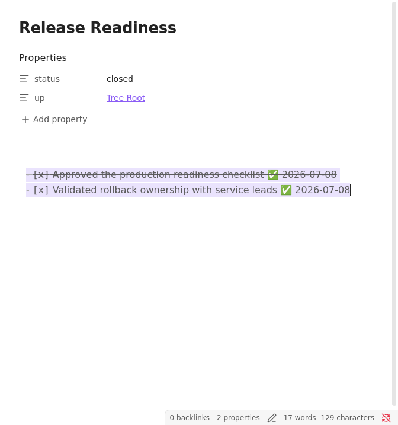
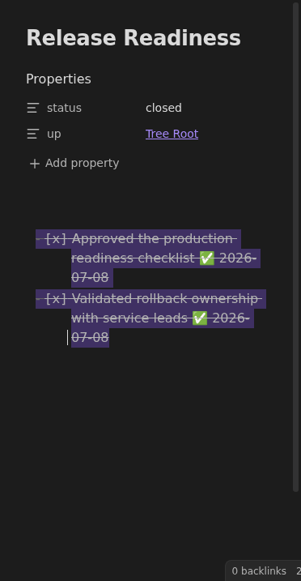
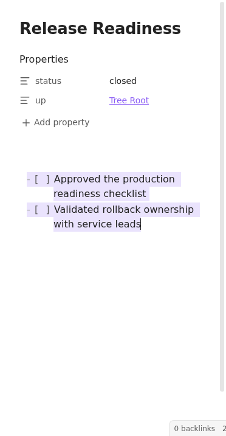
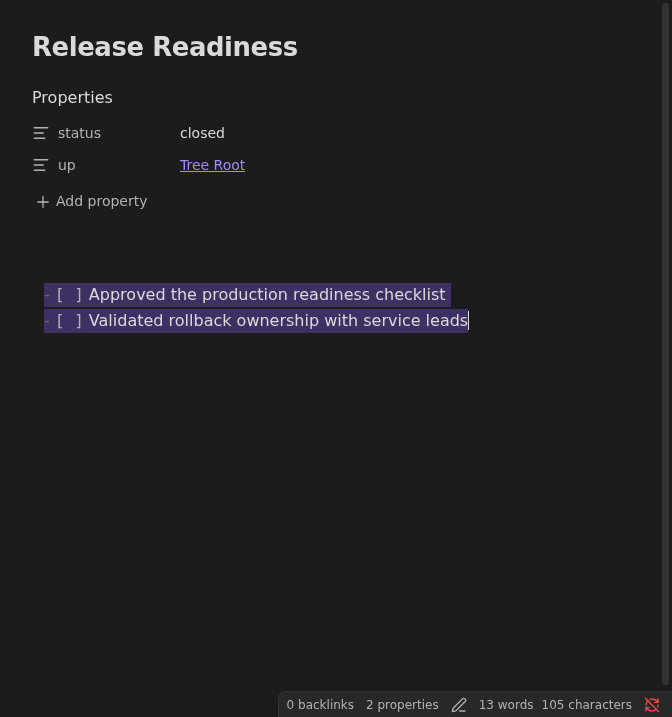

Feature
Uncheck selected tasks
The editor command turns selected completed task lines back into unchecked tasks and removes Tasks completion dates.
Rationale
Why it exists.
Why Uncheck Selected Tasks Exists
Completed task markers are easy to create accidentally, especially when using keyboard shortcuts in a long note. Reopening the task should not require the user to remember which completion-date emoji needs to be removed.
The command works directly in the editor because the user is already looking at
the specific checklist lines they want to reopen. Its default shortcut,
Ctrl+Shift+D, mirrors the user's Ctrl+D checking shortcut as the inverse
operation.
Executable documentation
Acceptance criteria.
- The command is available only when the current editor selection contains checked task lines.
- The command has a default
Ctrl+Shift+Dhotkey for mass unchecking selected tasks. - Standard checked task markers become unchecked markers.
- Tasks completion dates are removed from reopened task lines.
- The command uses the Tasks API when available and falls back to local line rewriting otherwise.
Screenshots
Generated by WDIO.






Fixtures
Shared vault examples.
acceptance/fixtures/base/Db/Growth/Completed Toggle.md